I adapt quickly and build
with passion!
Hello! I'm Fern, a Computer Science student with a strong academic foundation. I am a fast learner who embraces new challenges and highly adaptable to any situation and new technologies.
Experience With


Projects
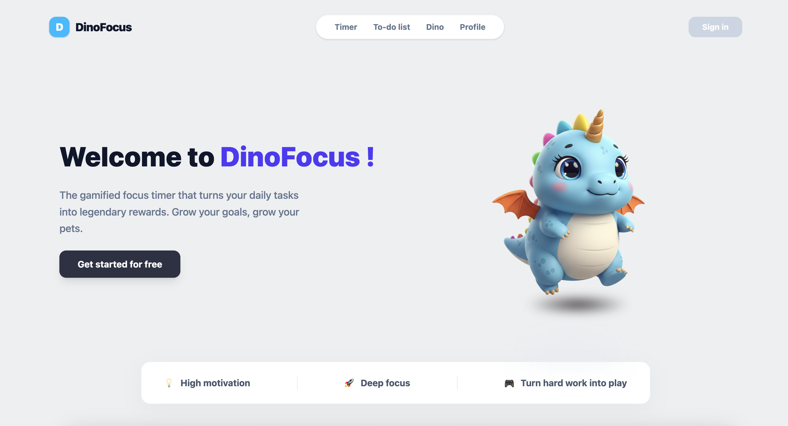
Web Application
Dinofocus
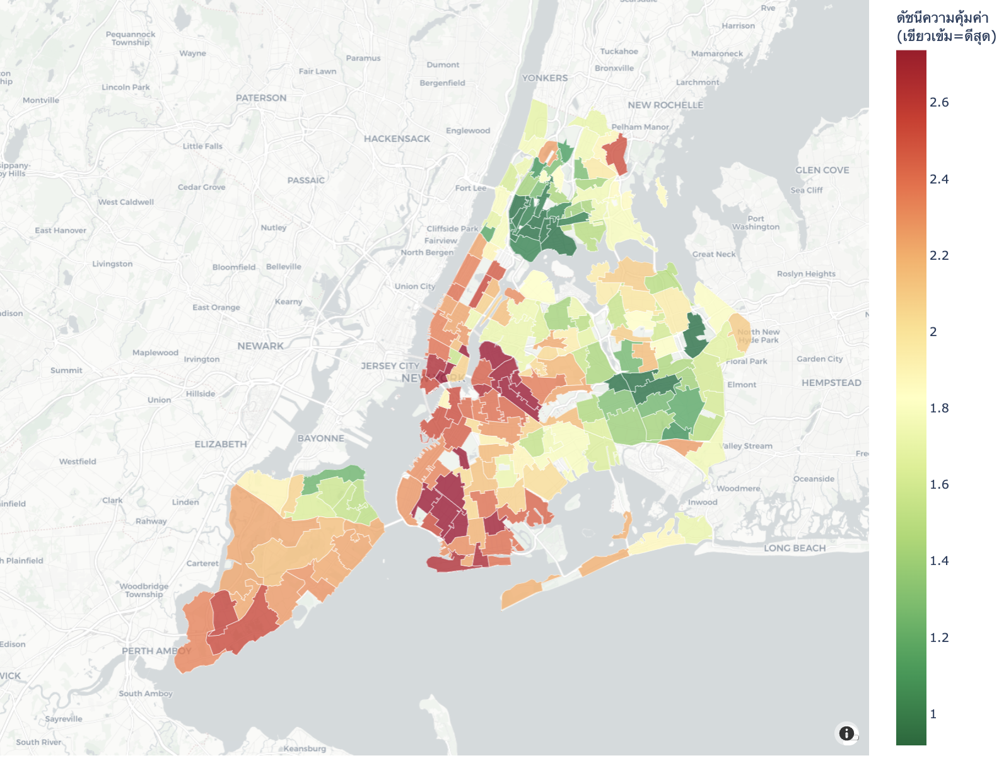
Machine Learning Model
New York House Prediction
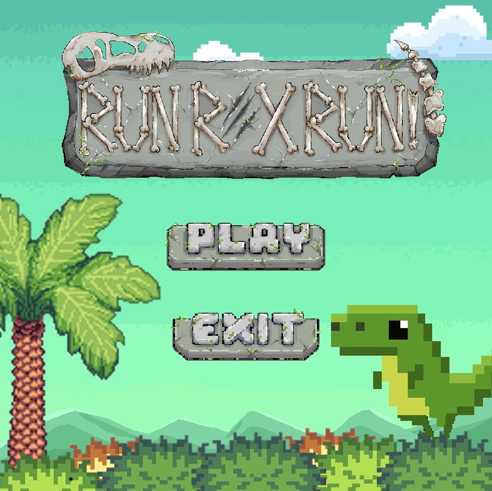
Java OOP Game
RUN REX RUN
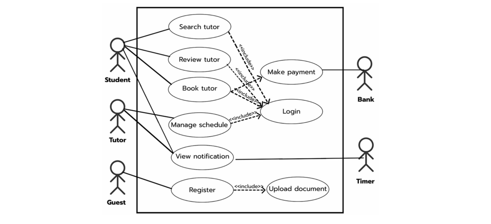
System Analysis
TutorMatch
Experience & Activities
2025 - Present
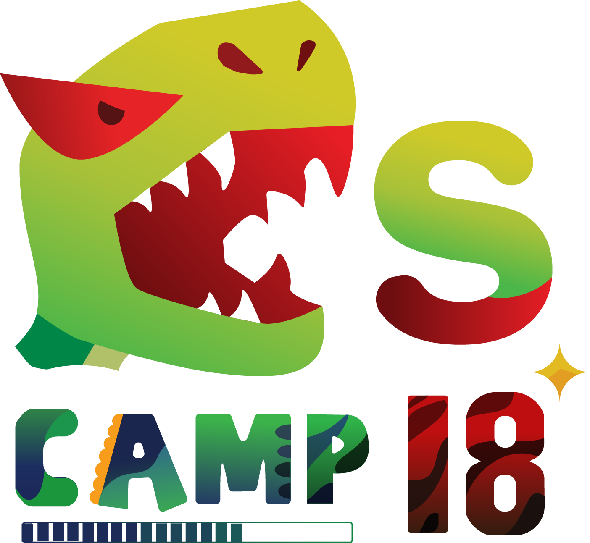
Head Sponsor 18th Computer Science Camp
@สถาบันเทคโนโลยีพระจอมเกล้าเจ้าคุณทหารลาดกระบัง
นำทีมงานฝ่ายสปอนเซอร์จำนวน 5 คน วางแผนกลยุทธ์ติดต่อและนำเสนอโครงการกับบริษัทเทคโนโลยีและองค์กรต่างๆกว่า 150 แห่ง ประสบความสำเร็จในการจัดหาเงินทุนและสิ่งของสนับสนุนมูลค่ารวมกว่า 30,000 บาท พร้อมประสานงานดูแลสิทธิประโยชน์ของสปอนเซอร์ให้ครบถ้วนตลอดการจัดค่าย
Education & Certificates
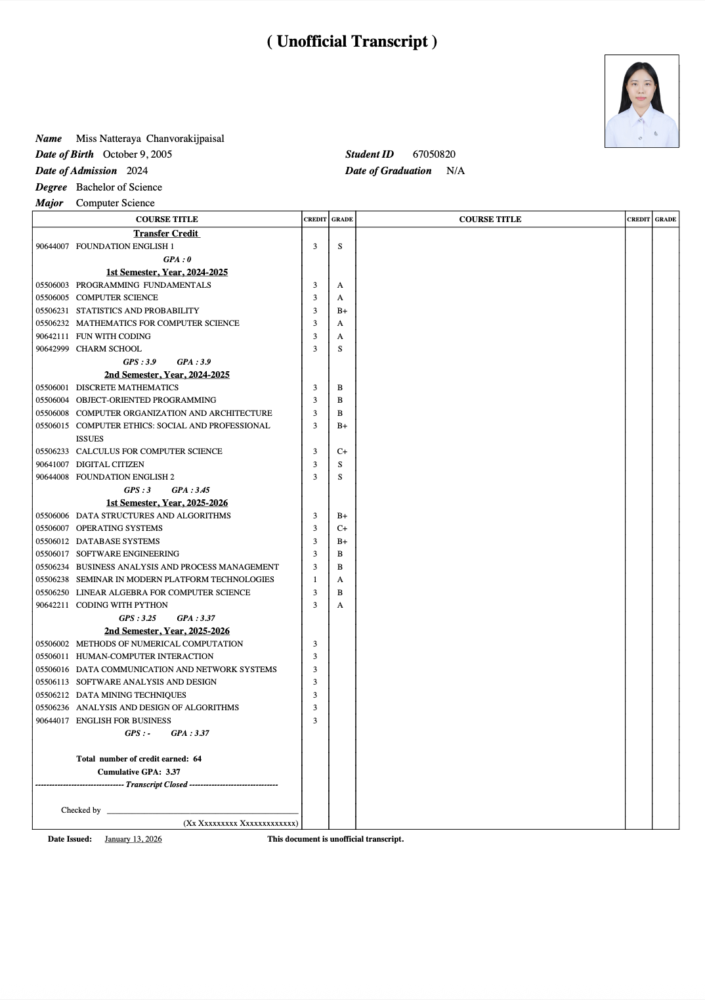
Academic Transcript
Computer Science • Current GPA: 3.37
Discovery Piscine Program
42 Bangkok KMITL • 2025
Crash Course on Python
Google • 2023
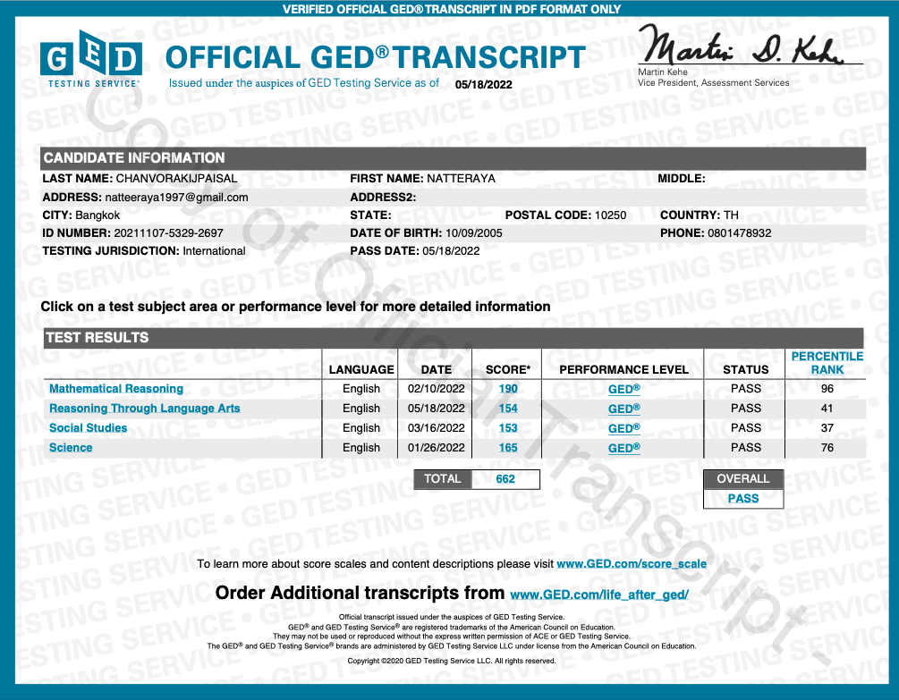
Official GED Transcript
GED • 2022
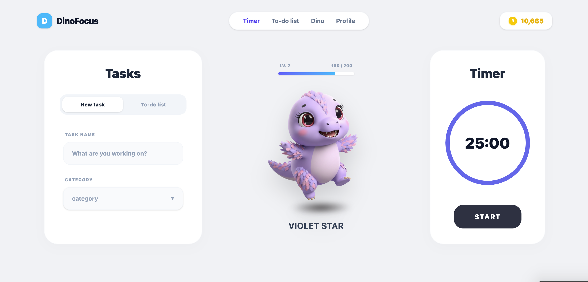
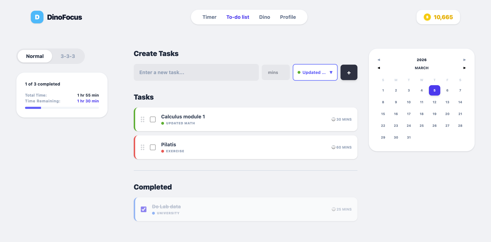
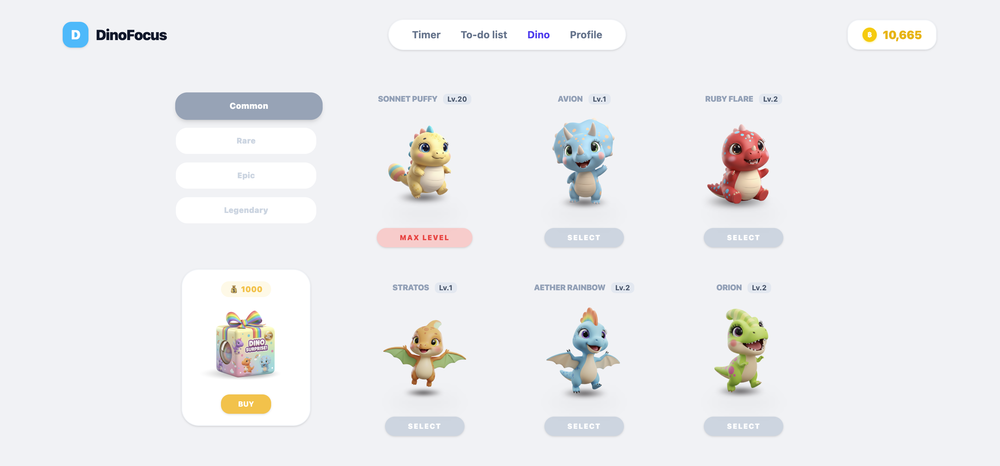
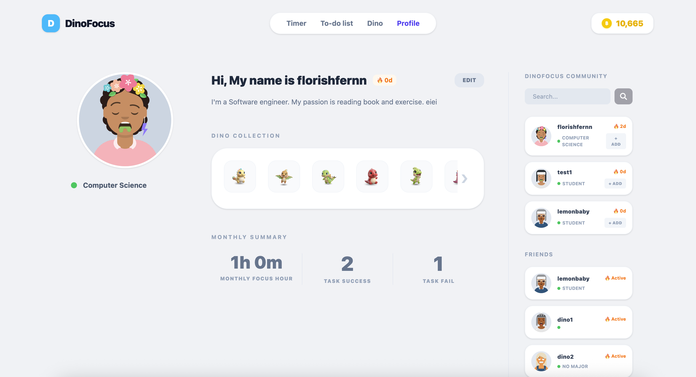
Dinofocus
แอปพลิเคชัน Pomodoro Timer ธีมไดโนเสาร์ ที่สร้างขึ้นเพื่อช่วยเพิ่มประสิทธิภาพในการโฟกัสและจัดการเวลาทำงาน โดยผสมผสานระบบนาฬิกาจับเวลาเข้ากับระบบ To-do list พร้อมระบบสมาชิกเพื่อบันทึกและติดตามความคืบหน้าของผู้ใช้งาน
Key Features & My Role:
- ออกแบบหน้าตาเว็บและ User Flow ทั้งหมดด้วย Figma
- วางโครงสร้างและพัฒนาระบบหลังบ้านด้วย Node.js และ Express (Routes, Controllers, Services)
- ออกแบบฐานข้อมูล MySQL และพัฒนาระบบยืนยันตัวตนที่ปลอดภัยด้วย JWT และ Bcrypt